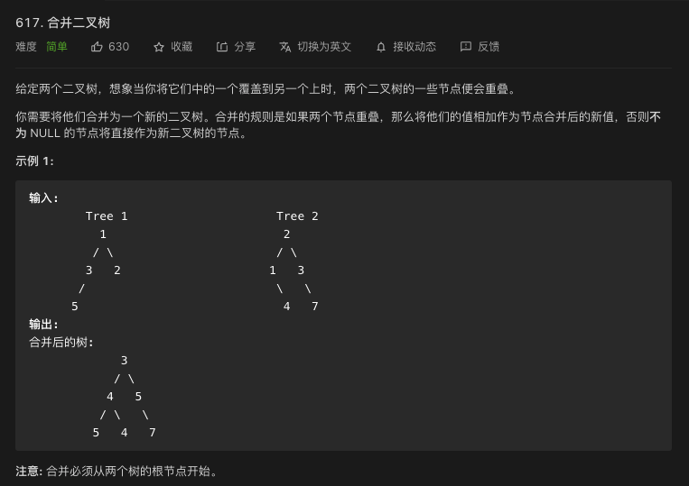

<!DOCTYPE HTML>
<html lang="zh-CN">


<head>
    <meta charset="utf-8">
    <meta name="keywords" content="LeetCode热题100-617.合并二叉树, Gareth&#39;s Backyard">
    <meta name="description" content="">
    <meta http-equiv="X-UA-Compatible" content="IE=edge">
    <meta name="viewport" content="width=device-width, initial-scale=1.0, user-scalable=no">
    <meta name="renderer" content="webkit|ie-stand|ie-comp">
    <meta name="mobile-web-app-capable" content="yes">
    <meta name="format-detection" content="telephone=no">
    <meta name="apple-mobile-web-app-capable" content="yes">
    <meta name="apple-mobile-web-app-status-bar-style" content="black-translucent">
    <!-- Global site tag (gtag.js) - Google Analytics -->


    <title>LeetCode热题100-617.合并二叉树 | Gareth&#39;s Backyard</title>
    <link rel="icon" type="image/png" href="/favicon.png">

    <link rel="stylesheet" type="text/css" href="/libs/awesome/css/all.css">
    <link rel="stylesheet" type="text/css" href="/libs/materialize/materialize.min.css">
    <link rel="stylesheet" type="text/css" href="/libs/aos/aos.css">
    <link rel="stylesheet" type="text/css" href="/libs/animate/animate.min.css">
    <link rel="stylesheet" type="text/css" href="/libs/lightGallery/css/lightgallery.min.css">
    <link rel="stylesheet" type="text/css" href="/css/matery.css">
    <link rel="stylesheet" type="text/css" href="/css/my.css">

    <script src="/libs/jquery/jquery.min.js"></script>

<meta name="generator" content="Hexo 5.4.0"></head>


<body>
    <header class="navbar-fixed">
    <nav id="headNav" class="bg-color nav-transparent">
        <div id="navContainer" class="nav-wrapper container">
            <div class="brand-logo">
                <a href="/" class="waves-effect waves-light">
                    
                    
                    
                    <span class="logo-span">Gareth&#39;s Backyard</span>
                </a>
            </div>
            

<a href="#" data-target="mobile-nav" class="sidenav-trigger button-collapse"><i class="fas fa-bars"></i></a>
<ul class="right nav-menu">
  
  <li class="hide-on-med-and-down nav-item">
    
    <a href="/" class="waves-effect waves-light">
      
      <i class="fas fa-home" style="zoom: 0.6;"></i>
      
      <span>首页</span>
    </a>
    
  </li>
  
  <li class="hide-on-med-and-down nav-item">
    
    <a href="/tags" class="waves-effect waves-light">
      
      <i class="fas fa-tags" style="zoom: 0.6;"></i>
      
      <span>标签</span>
    </a>
    
  </li>
  
  <li class="hide-on-med-and-down nav-item">
    
    <a href="/categories" class="waves-effect waves-light">
      
      <i class="fas fa-bookmark" style="zoom: 0.6;"></i>
      
      <span>分类</span>
    </a>
    
  </li>
  
  <li class="hide-on-med-and-down nav-item">
    
    <a href="/archives" class="waves-effect waves-light">
      
      <i class="fas fa-archive" style="zoom: 0.6;"></i>
      
      <span>归档</span>
    </a>
    
  </li>
  
  <li class="hide-on-med-and-down nav-item">
    
    <a href="/about" class="waves-effect waves-light">
      
      <i class="fas fa-user-circle" style="zoom: 0.6;"></i>
      
      <span>关于</span>
    </a>
    
  </li>
  
  <li class="hide-on-med-and-down nav-item">
    
    <a href="/contact" class="waves-effect waves-light">
      
      <i class="fas fa-comments" style="zoom: 0.6;"></i>
      
      <span>留言板</span>
    </a>
    
  </li>
  
  <li class="hide-on-med-and-down nav-item">
    
    <a href="/friends" class="waves-effect waves-light">
      
      <i class="fas fa-address-book" style="zoom: 0.6;"></i>
      
      <span>友情链接</span>
    </a>
    
  </li>
  
  <li>
    <a href="#searchModal" class="modal-trigger waves-effect waves-light">
      <i id="searchIcon" class="fas fa-search" title="搜索" style="zoom: 0.85;"></i>
    </a>
  </li>
</ul>


<div id="mobile-nav" class="side-nav sidenav">

    <div class="mobile-head bg-color">
        
        
        
        <div class="logo-name">Gareth&#39;s Backyard</div>
        <div class="logo-desc">
            
            Never really desperate, only the lost of the soul.
            
        </div>
    </div>

    

    <ul class="menu-list mobile-menu-list">
        
        <li class="m-nav-item">
	  
		<a href="/" class="waves-effect waves-light">
			
			    <i class="fa-fw fas fa-home"></i>
			
			首页
		</a>
          
        </li>
        
        <li class="m-nav-item">
	  
		<a href="/tags" class="waves-effect waves-light">
			
			    <i class="fa-fw fas fa-tags"></i>
			
			标签
		</a>
          
        </li>
        
        <li class="m-nav-item">
	  
		<a href="/categories" class="waves-effect waves-light">
			
			    <i class="fa-fw fas fa-bookmark"></i>
			
			分类
		</a>
          
        </li>
        
        <li class="m-nav-item">
	  
		<a href="/archives" class="waves-effect waves-light">
			
			    <i class="fa-fw fas fa-archive"></i>
			
			归档
		</a>
          
        </li>
        
        <li class="m-nav-item">
	  
		<a href="/about" class="waves-effect waves-light">
			
			    <i class="fa-fw fas fa-user-circle"></i>
			
			关于
		</a>
          
        </li>
        
        <li class="m-nav-item">
	  
		<a href="/contact" class="waves-effect waves-light">
			
			    <i class="fa-fw fas fa-comments"></i>
			
			留言板
		</a>
          
        </li>
        
        <li class="m-nav-item">
	  
		<a href="/friends" class="waves-effect waves-light">
			
			    <i class="fa-fw fas fa-address-book"></i>
			
			友情链接
		</a>
          
        </li>
        
        
        <li><div class="divider"></div></li>
        <li>
            <a href="https://github.com/blinkfox/hexo-theme-matery" class="waves-effect waves-light" target="_blank">
                <i class="fab fa-github-square fa-fw"></i>Fork Me
            </a>
        </li>
        
    </ul>
</div>


        </div>

        
            <style>
    .nav-transparent .github-corner {
        display: none !important;
    }

    .github-corner {
        position: absolute;
        z-index: 10;
        top: 0;
        right: 0;
        border: 0;
        transform: scale(1.1);
    }

    .github-corner svg {
        color: #0f9d58;
        fill: #fff;
        height: 64px;
        width: 64px;
    }

    .github-corner:hover .octo-arm {
        animation: a 0.56s ease-in-out;
    }

    .github-corner .octo-arm {
        animation: none;
    }

    @keyframes a {
        0%,
        to {
            transform: rotate(0);
        }
        20%,
        60% {
            transform: rotate(-25deg);
        }
        40%,
        80% {
            transform: rotate(10deg);
        }
    }
</style>

<a href="https://github.com/blinkfox/hexo-theme-matery" class="github-corner tooltipped hide-on-med-and-down" target="_blank"
   data-tooltip="Fork Me" data-position="left" data-delay="50">
    <svg viewBox="0 0 250 250" aria-hidden="true">
        <path d="M0,0 L115,115 L130,115 L142,142 L250,250 L250,0 Z"></path>
        <path d="M128.3,109.0 C113.8,99.7 119.0,89.6 119.0,89.6 C122.0,82.7 120.5,78.6 120.5,78.6 C119.2,72.0 123.4,76.3 123.4,76.3 C127.3,80.9 125.5,87.3 125.5,87.3 C122.9,97.6 130.6,101.9 134.4,103.2"
              fill="currentColor" style="transform-origin: 130px 106px;" class="octo-arm"></path>
        <path d="M115.0,115.0 C114.9,115.1 118.7,116.5 119.8,115.4 L133.7,101.6 C136.9,99.2 139.9,98.4 142.2,98.6 C133.8,88.0 127.5,74.4 143.8,58.0 C148.5,53.4 154.0,51.2 159.7,51.0 C160.3,49.4 163.2,43.6 171.4,40.1 C171.4,40.1 176.1,42.5 178.8,56.2 C183.1,58.6 187.2,61.8 190.9,65.4 C194.5,69.0 197.7,73.2 200.1,77.6 C213.8,80.2 216.3,84.9 216.3,84.9 C212.7,93.1 206.9,96.0 205.4,96.6 C205.1,102.4 203.0,107.8 198.3,112.5 C181.9,128.9 168.3,122.5 157.7,114.1 C157.9,116.9 156.7,120.9 152.7,124.9 L141.0,136.5 C139.8,137.7 141.6,141.9 141.8,141.8 Z"
              fill="currentColor" class="octo-body"></path>
    </svg>
</a>
        
    </nav>

</header>

    


<div class="bg-cover pd-header post-cover" style="background-image: url('/medias/featureimages/8.jpg')">
    <div class="container" style="right: 0px;left: 0px;">
        <div class="row">
            <div class="col s12 m12 l12">
                <div class="brand">
                    <h1 class="description center-align post-title">LeetCode热题100-617.合并二叉树</h1>
                </div>
            </div>
        </div>
    </div>
</div>


<main class="post-container content">

    
    <link rel="stylesheet" href="/libs/tocbot/tocbot.css">
<style>
    #articleContent h1::before,
    #articleContent h2::before,
    #articleContent h3::before,
    #articleContent h4::before,
    #articleContent h5::before,
    #articleContent h6::before {
        display: block;
        content: " ";
        height: 100px;
        margin-top: -100px;
        visibility: hidden;
    }

    #articleContent :focus {
        outline: none;
    }

    .toc-fixed {
        position: fixed;
        top: 64px;
    }

    .toc-widget {
        width: 345px;
        padding-left: 20px;
    }

    .toc-widget .toc-title {
        padding: 35px 0 15px 17px;
        font-size: 1.5rem;
        font-weight: bold;
        line-height: 1.5rem;
    }

    .toc-widget ol {
        padding: 0;
        list-style: none;
    }

    #toc-content {
        padding-bottom: 30px;
        overflow: auto;
    }

    #toc-content ol {
        padding-left: 10px;
    }

    #toc-content ol li {
        padding-left: 10px;
    }

    #toc-content .toc-link:hover {
        color: #42b983;
        font-weight: 700;
        text-decoration: underline;
    }

    #toc-content .toc-link::before {
        background-color: transparent;
        max-height: 25px;

        position: absolute;
        right: 23.5vw;
        display: block;
    }

    #toc-content .is-active-link {
        color: #42b983;
    }

    #floating-toc-btn {
        position: fixed;
        right: 15px;
        bottom: 76px;
        padding-top: 15px;
        margin-bottom: 0;
        z-index: 998;
    }

    #floating-toc-btn .btn-floating {
        width: 48px;
        height: 48px;
    }

    #floating-toc-btn .btn-floating i {
        line-height: 48px;
        font-size: 1.4rem;
    }
</style>
<div class="row">
    <div id="main-content" class="col s12 m12 l9">
        <!-- 文章内容详情 -->
<div id="artDetail">
    <div class="card">
        <div class="card-content article-info">
            <div class="row tag-cate">
                <div class="col s7">
                    
                    <div class="article-tag">
                        
                            <a href="/tags/LeetCode/">
                                <span class="chip bg-color">LeetCode</span>
                            </a>
                        
                            <a href="/tags/%E7%AE%97%E6%B3%95/">
                                <span class="chip bg-color">算法</span>
                            </a>
                        
                            <a href="/tags/%E4%BA%8C%E5%8F%89%E6%A0%91/">
                                <span class="chip bg-color">二叉树</span>
                            </a>
                        
                    </div>
                    
                </div>
                <div class="col s5 right-align">
                    
                </div>
            </div>

            <div class="post-info">
                
                <div class="post-date info-break-policy">
                    <i class="far fa-calendar-minus fa-fw"></i>发布日期:&nbsp;&nbsp;
                    2021-03-04
                </div>
                

                

                

                

                
            </div>
        </div>
        <hr class="clearfix">

        
        <!-- 是否加载使用自带的 prismjs. -->
        <link rel="stylesheet" href="/libs/prism/prism.css">
        

        

        <div class="card-content article-card-content">
            <div id="articleContent">
                <h1 id="题目信息"><a href="#题目信息" class="headerlink" title="题目信息"></a>题目信息</h1><p><br>这道题从目的上来看，要合并两棵二叉树的所有节点，说明应该是需要对所有节点进行遍历，这有何难！区别就在于这里要同时遍历两棵树。</p>
<h1 id="回顾：二叉树的四种遍历方式"><a href="#回顾：二叉树的四种遍历方式" class="headerlink" title="回顾：二叉树的四种遍历方式"></a>回顾：二叉树的四种遍历方式</h1><p>根据根节点的访问顺序将遍历二叉树分为三种：前序遍历、中序遍历、后序遍历。<br>三种遍历思路都可以通过递归实现，前序遍历和中序遍历可以借助栈、后序遍历可以借助两个栈非递归实现。</p>
<h2 id="前序遍历"><a href="#前序遍历" class="headerlink" title="前序遍历"></a>前序遍历</h2><blockquote>
<p>递归</p>
</blockquote>
<pre class="line-numbers language-csharp" data-language="csharp"><code class="language-csharp"><span class="token keyword">public</span> <span class="token return-type class-name"><span class="token keyword">void</span></span> <span class="token function">PreOrder</span><span class="token punctuation">(</span><span class="token class-name">TreeNode</span> root<span class="token punctuation">)</span>
<span class="token punctuation">&#123;</span>
    <span class="token keyword">if</span> <span class="token punctuation">(</span>root <span class="token operator">==</span> <span class="token keyword">null</span><span class="token punctuation">)</span> <span class="token keyword">return</span><span class="token punctuation">;</span>
    <span class="token function">doSomething</span><span class="token punctuation">(</span>root<span class="token punctuation">)</span><span class="token punctuation">;</span>
    <span class="token function">PreOrder</span><span class="token punctuation">(</span>root<span class="token punctuation">.</span>left<span class="token punctuation">)</span><span class="token punctuation">;</span>
    <span class="token function">PreOrder</span><span class="token punctuation">(</span>root<span class="token punctuation">.</span>right<span class="token punctuation">)</span><span class="token punctuation">;</span>
<span class="token punctuation">&#125;</span><span aria-hidden="true" class="line-numbers-rows"><span></span><span></span><span></span><span></span><span></span><span></span><span></span></span></code></pre>
<blockquote>
<p>非递归先序遍历的思路：<br>1.用一个变量node表示当前节点并且入栈，初始值为根节点root<br>2.弹出一个节点赋值给node，打印这个值，先将右儿子（非空）入栈，再将左儿子（非空）入栈，先右再左的原因是栈的操作是先入后出，重复这个步骤<br>4.循环的结束条件为：栈为空</p>
</blockquote>
<pre class="line-numbers language-csharp" data-language="csharp"><code class="language-csharp"><span class="token keyword">public</span> <span class="token return-type class-name"><span class="token keyword">void</span></span> <span class="token function">PreOrderStack</span><span class="token punctuation">(</span><span class="token class-name">TreeNode</span> root<span class="token punctuation">)</span>
<span class="token punctuation">&#123;</span>
    <span class="token keyword">if</span> <span class="token punctuation">(</span>root <span class="token operator">==</span> <span class="token keyword">null</span><span class="token punctuation">)</span> <span class="token keyword">return</span><span class="token punctuation">;</span>
    <span class="token class-name"><span class="token keyword">var</span></span> q <span class="token operator">=</span> <span class="token keyword">new</span> <span class="token constructor-invocation class-name">Stack<span class="token punctuation">&lt;</span>TreeNode<span class="token punctuation">></span></span><span class="token punctuation">(</span><span class="token punctuation">)</span><span class="token punctuation">;</span>
    q<span class="token punctuation">.</span><span class="token function">Push</span><span class="token punctuation">(</span>root<span class="token punctuation">)</span><span class="token punctuation">;</span>
    <span class="token keyword">while</span> <span class="token punctuation">(</span>q<span class="token punctuation">.</span>Count <span class="token operator">!=</span> <span class="token number">0</span><span class="token punctuation">)</span>
    <span class="token punctuation">&#123;</span>
        <span class="token class-name"><span class="token keyword">var</span></span> node <span class="token operator">=</span> q<span class="token punctuation">.</span><span class="token function">Pop</span><span class="token punctuation">(</span><span class="token punctuation">)</span><span class="token punctuation">;</span>
        <span class="token function">doSomething</span><span class="token punctuation">(</span>node<span class="token punctuation">)</span><span class="token punctuation">;</span>
        <span class="token keyword">if</span> <span class="token punctuation">(</span>node<span class="token punctuation">.</span>right <span class="token operator">!=</span> <span class="token keyword">null</span><span class="token punctuation">)</span>
        <span class="token punctuation">&#123;</span>
            q<span class="token punctuation">.</span><span class="token function">Push</span><span class="token punctuation">(</span>node<span class="token punctuation">.</span>right<span class="token punctuation">)</span><span class="token punctuation">;</span>
        <span class="token punctuation">&#125;</span>
        <span class="token keyword">if</span> <span class="token punctuation">(</span>node<span class="token punctuation">.</span>left <span class="token operator">!=</span> <span class="token keyword">null</span><span class="token punctuation">)</span>
        <span class="token punctuation">&#123;</span>
            q<span class="token punctuation">.</span><span class="token function">Push</span><span class="token punctuation">(</span>node<span class="token punctuation">.</span>left<span class="token punctuation">)</span><span class="token punctuation">;</span>
        <span class="token punctuation">&#125;</span>
    <span class="token punctuation">&#125;</span>
<span class="token punctuation">&#125;</span><span aria-hidden="true" class="line-numbers-rows"><span></span><span></span><span></span><span></span><span></span><span></span><span></span><span></span><span></span><span></span><span></span><span></span><span></span><span></span><span></span><span></span><span></span><span></span><span></span></span></code></pre>

<h2 id="中序遍历"><a href="#中序遍历" class="headerlink" title="中序遍历"></a>中序遍历</h2><blockquote>
<p>递归</p>
</blockquote>
<pre class="line-numbers language-csharp" data-language="csharp"><code class="language-csharp"><span class="token keyword">public</span> <span class="token return-type class-name"><span class="token keyword">void</span></span> <span class="token function">InOrder</span><span class="token punctuation">(</span><span class="token class-name">TreeNode</span> root<span class="token punctuation">)</span>
<span class="token punctuation">&#123;</span>
    <span class="token keyword">if</span> <span class="token punctuation">(</span>root <span class="token operator">==</span> <span class="token keyword">null</span><span class="token punctuation">)</span> <span class="token keyword">return</span><span class="token punctuation">;</span>
    <span class="token function">InOrder</span><span class="token punctuation">(</span>root<span class="token punctuation">.</span>left<span class="token punctuation">)</span><span class="token punctuation">;</span>
    <span class="token function">doSomething</span><span class="token punctuation">(</span>root<span class="token punctuation">)</span><span class="token punctuation">;</span>
    <span class="token function">InOrder</span><span class="token punctuation">(</span>root<span class="token punctuation">.</span>right<span class="token punctuation">)</span><span class="token punctuation">;</span>
<span class="token punctuation">&#125;</span><span aria-hidden="true" class="line-numbers-rows"><span></span><span></span><span></span><span></span><span></span><span></span><span></span></span></code></pre>
<blockquote>
<p>非递归中序遍历的思路：<br>1.用一个变量node表示当前节点并且入栈，初始值为根节点root<br>2.不断将node的左子节点入栈，并令node=node.left，重复这个过程直到node.left为null，即叶子节点<br>3.弹出一个节点temp，打印这个值，将temp.right赋值给node，回到步骤2<br>4.循环的结束条件为：栈为空且node为空</p>
</blockquote>
<pre class="line-numbers language-csharp" data-language="csharp"><code class="language-csharp"><span class="token keyword">public</span> <span class="token return-type class-name"><span class="token keyword">void</span></span> <span class="token function">InOrderStack</span><span class="token punctuation">(</span><span class="token class-name">TreeNode</span> root<span class="token punctuation">)</span>
<span class="token punctuation">&#123;</span>
    <span class="token keyword">if</span> <span class="token punctuation">(</span>root <span class="token operator">==</span> <span class="token keyword">null</span><span class="token punctuation">)</span> <span class="token keyword">return</span><span class="token punctuation">;</span>
    <span class="token class-name"><span class="token keyword">var</span></span> stack <span class="token operator">=</span> <span class="token keyword">new</span> <span class="token constructor-invocation class-name">Stack<span class="token punctuation">&lt;</span>TreeNode<span class="token punctuation">></span></span><span class="token punctuation">(</span><span class="token punctuation">)</span><span class="token punctuation">;</span>
    <span class="token class-name"><span class="token keyword">var</span></span> node <span class="token operator">=</span> root<span class="token punctuation">;</span>
    <span class="token keyword">while</span> <span class="token punctuation">(</span>stack<span class="token punctuation">.</span>Count <span class="token operator">!=</span> <span class="token number">0</span><span class="token punctuation">)</span>
    <span class="token punctuation">&#123;</span>
        <span class="token comment">//持续将左子节点入栈，直到叶子节点</span>
        <span class="token keyword">while</span><span class="token punctuation">(</span>node <span class="token operator">!=</span> <span class="token keyword">null</span> <span class="token operator">||</span> stack<span class="token punctuation">.</span>Count <span class="token operator">!=</span> <span class="token number">0</span><span class="token punctuation">)</span>
        <span class="token punctuation">&#123;</span>
            stack<span class="token punctuation">.</span><span class="token function">Push</span><span class="token punctuation">(</span>node<span class="token punctuation">)</span><span class="token punctuation">;</span>
            node <span class="token operator">=</span> node<span class="token punctuation">.</span>left<span class="token punctuation">;</span>
        <span class="token punctuation">&#125;</span>
        <span class="token comment">//弹出一个节点</span>
        node <span class="token operator">=</span> stack<span class="token punctuation">.</span><span class="token function">Pop</span><span class="token punctuation">(</span><span class="token punctuation">)</span><span class="token punctuation">;</span>
        <span class="token function">doSomething</span><span class="token punctuation">(</span>node<span class="token punctuation">)</span><span class="token punctuation">;</span>
        <span class="token comment">//遍历右子树</span>
        node <span class="token operator">=</span> node<span class="token punctuation">.</span>right<span class="token punctuation">;</span>
    <span class="token punctuation">&#125;</span>
<span class="token punctuation">&#125;</span><span aria-hidden="true" class="line-numbers-rows"><span></span><span></span><span></span><span></span><span></span><span></span><span></span><span></span><span></span><span></span><span></span><span></span><span></span><span></span><span></span><span></span><span></span><span></span><span></span><span></span></span></code></pre>
<h2 id="后序遍历"><a href="#后序遍历" class="headerlink" title="后序遍历"></a>后序遍历</h2><blockquote>
<p>递归</p>
</blockquote>
<pre class="line-numbers language-csharp" data-language="csharp"><code class="language-csharp"><span class="token keyword">public</span> <span class="token return-type class-name"><span class="token keyword">void</span></span> <span class="token function">PostOrder</span><span class="token punctuation">(</span><span class="token class-name">TreeNode</span> root<span class="token punctuation">)</span>
<span class="token punctuation">&#123;</span>
    <span class="token keyword">if</span> <span class="token punctuation">(</span>root <span class="token operator">==</span> <span class="token keyword">null</span><span class="token punctuation">)</span> <span class="token keyword">return</span><span class="token punctuation">;</span>
    <span class="token function">PostOrder</span><span class="token punctuation">(</span>root<span class="token punctuation">.</span>left<span class="token punctuation">)</span><span class="token punctuation">;</span>
    <span class="token function">PostOrder</span><span class="token punctuation">(</span>root<span class="token punctuation">.</span>right<span class="token punctuation">)</span><span class="token punctuation">;</span>
    <span class="token function">doSomething</span><span class="token punctuation">(</span>root<span class="token punctuation">)</span><span class="token punctuation">;</span>
<span class="token punctuation">&#125;</span><span aria-hidden="true" class="line-numbers-rows"><span></span><span></span><span></span><span></span><span></span><span></span><span></span></span></code></pre>
<blockquote>
<p>后序遍历的非递归实现思路-1：<br>1.申请两个栈st1和st2，将跟节点入st1<br>2.从st1弹出一个节点，赋值给node，将node的左右子节点压入st1，弹出的node压入st2<br>3.重复步骤2，直到st1为空<br>4.将st2按顺序弹出，弹出的顺序就是后序遍历的顺序  </p>
</blockquote>
<pre class="line-numbers language-csharp" data-language="csharp"><code class="language-csharp"><span class="token keyword">public</span> <span class="token return-type class-name"><span class="token keyword">void</span></span> <span class="token function">PostOrderStacks</span><span class="token punctuation">(</span><span class="token class-name">TreeNode</span> root<span class="token punctuation">)</span>
<span class="token punctuation">&#123;</span>
    <span class="token keyword">if</span> <span class="token punctuation">(</span>root <span class="token operator">==</span> <span class="token keyword">null</span><span class="token punctuation">)</span> <span class="token keyword">return</span><span class="token punctuation">;</span>
    <span class="token class-name"><span class="token keyword">var</span></span> st1 <span class="token operator">=</span> <span class="token keyword">new</span> <span class="token constructor-invocation class-name">Stack<span class="token punctuation">&lt;</span>TreeNode<span class="token punctuation">></span></span><span class="token punctuation">(</span><span class="token punctuation">)</span><span class="token punctuation">;</span>
    <span class="token class-name"><span class="token keyword">var</span></span> st2 <span class="token operator">=</span> <span class="token keyword">new</span> <span class="token constructor-invocation class-name">Stack<span class="token punctuation">&lt;</span>TreeNode<span class="token punctuation">></span></span><span class="token punctuation">(</span><span class="token punctuation">)</span><span class="token punctuation">;</span>
    st1<span class="token punctuation">.</span><span class="token function">Push</span><span class="token punctuation">(</span>root<span class="token punctuation">)</span><span class="token punctuation">;</span>
    <span class="token keyword">while</span> <span class="token punctuation">(</span>st1<span class="token punctuation">.</span>Count <span class="token operator">!=</span> <span class="token number">0</span><span class="token punctuation">)</span>
    <span class="token punctuation">&#123;</span>
        <span class="token class-name"><span class="token keyword">var</span></span> node <span class="token operator">=</span> st1<span class="token punctuation">.</span><span class="token function">Pop</span><span class="token punctuation">(</span><span class="token punctuation">)</span><span class="token punctuation">;</span>
        <span class="token keyword">if</span> <span class="token punctuation">(</span>node<span class="token punctuation">.</span>left <span class="token operator">!=</span> <span class="token keyword">null</span><span class="token punctuation">)</span>
        <span class="token punctuation">&#123;</span>
            st1<span class="token punctuation">.</span><span class="token function">Push</span><span class="token punctuation">(</span>node<span class="token punctuation">.</span>left<span class="token punctuation">)</span><span class="token punctuation">;</span>
        <span class="token punctuation">&#125;</span>
        <span class="token keyword">if</span> <span class="token punctuation">(</span>node<span class="token punctuation">.</span>right <span class="token operator">!=</span> <span class="token keyword">null</span><span class="token punctuation">)</span>
        <span class="token punctuation">&#123;</span>
            st1<span class="token punctuation">.</span><span class="token function">Push</span><span class="token punctuation">(</span>node<span class="token punctuation">.</span>right<span class="token punctuation">)</span><span class="token punctuation">;</span>
        <span class="token punctuation">&#125;</span>
        st2<span class="token punctuation">.</span><span class="token function">Push</span><span class="token punctuation">(</span>node<span class="token punctuation">)</span><span class="token punctuation">;</span>
    <span class="token punctuation">&#125;</span>
    <span class="token keyword">while</span> <span class="token punctuation">(</span>st2<span class="token punctuation">.</span>Count <span class="token operator">!=</span> <span class="token number">0</span><span class="token punctuation">)</span>
    <span class="token punctuation">&#123;</span>
        <span class="token function">doSomething</span><span class="token punctuation">(</span>st2<span class="token punctuation">.</span><span class="token function">Pop</span><span class="token punctuation">(</span><span class="token punctuation">)</span><span class="token punctuation">)</span><span class="token punctuation">;</span>
    <span class="token punctuation">&#125;</span>
<span class="token punctuation">&#125;</span><span aria-hidden="true" class="line-numbers-rows"><span></span><span></span><span></span><span></span><span></span><span></span><span></span><span></span><span></span><span></span><span></span><span></span><span></span><span></span><span></span><span></span><span></span><span></span><span></span><span></span><span></span><span></span><span></span><span></span></span></code></pre>
<blockquote>
<p>后序遍历的非递归实现思路-2：<br>1.申请一个栈<code>st</code>，一个变量<code>node</code>用作标记，将根节点<code>root</code>入栈，<code>node</code>的初始值设为root<br>2.设<code>peak</code>为<code>st</code>的栈顶节点：每次循环考虑以下三种情况：<br>(1)<code>peak.left != null &amp;&amp; peak.left != node &amp;&amp; peak.right != node</code>, 把<code>peak</code>的左儿子压入<code>st</code><br>(2)<code>peak.right != null &amp;&amp; peak.right != node</code>，把<code>peak</code>的右儿子压入<code>st</code><br>(3)如果(1)和(2)不成立，弹出<code>peak</code>并打印，然后将<code>node</code>的值设为<code>peak</code><br>3.重复步骤2，直到<code>st</code>为空</p>
</blockquote>
<pre class="line-numbers language-csharp" data-language="csharp"><code class="language-csharp"><span class="token keyword">public</span> <span class="token return-type class-name"><span class="token keyword">void</span></span> <span class="token function">PostOrderStack</span><span class="token punctuation">(</span><span class="token class-name">TreeNode</span> root<span class="token punctuation">)</span>
<span class="token punctuation">&#123;</span>
    <span class="token keyword">if</span> <span class="token punctuation">(</span>root <span class="token operator">==</span> <span class="token keyword">null</span><span class="token punctuation">)</span> <span class="token keyword">return</span><span class="token punctuation">;</span>
    <span class="token class-name"><span class="token keyword">var</span></span> st <span class="token operator">=</span> <span class="token keyword">new</span> <span class="token constructor-invocation class-name">Stack<span class="token punctuation">&lt;</span>TreeNode<span class="token punctuation">></span></span><span class="token punctuation">(</span><span class="token punctuation">)</span><span class="token punctuation">;</span>
    st<span class="token punctuation">.</span><span class="token function">Push</span><span class="token punctuation">(</span>root<span class="token punctuation">)</span><span class="token punctuation">;</span>
    <span class="token class-name"><span class="token keyword">var</span></span> node <span class="token operator">=</span> root<span class="token punctuation">;</span>
    <span class="token keyword">while</span> <span class="token punctuation">(</span>st<span class="token punctuation">.</span>Count <span class="token operator">!=</span> <span class="token number">0</span><span class="token punctuation">)</span>
    <span class="token punctuation">&#123;</span>
        <span class="token class-name"><span class="token keyword">var</span></span> head <span class="token operator">=</span> st<span class="token punctuation">.</span><span class="token function">Peek</span><span class="token punctuation">(</span><span class="token punctuation">)</span><span class="token punctuation">;</span>
        <span class="token keyword">if</span> <span class="token punctuation">(</span>head<span class="token punctuation">.</span>left <span class="token operator">!=</span> <span class="token keyword">null</span> <span class="token operator">&amp;&amp;</span> head<span class="token punctuation">.</span>left <span class="token operator">!=</span> node <span class="token operator">&amp;&amp;</span> head<span class="token punctuation">.</span>right <span class="token operator">!=</span> node<span class="token punctuation">)</span>
        <span class="token punctuation">&#123;</span>
            st<span class="token punctuation">.</span><span class="token function">Push</span><span class="token punctuation">(</span>head<span class="token punctuation">.</span>left<span class="token punctuation">)</span><span class="token punctuation">;</span>
        <span class="token punctuation">&#125;</span>
        <span class="token keyword">else</span> <span class="token keyword">if</span> <span class="token punctuation">(</span>head<span class="token punctuation">.</span>right <span class="token operator">!=</span> <span class="token keyword">null</span> <span class="token operator">&amp;&amp;</span> head<span class="token punctuation">.</span>right <span class="token operator">!=</span> node<span class="token punctuation">)</span>
        <span class="token punctuation">&#123;</span>
            st<span class="token punctuation">.</span><span class="token function">Push</span><span class="token punctuation">(</span>head<span class="token punctuation">.</span>right<span class="token punctuation">)</span><span class="token punctuation">;</span>
        <span class="token punctuation">&#125;</span>
        <span class="token keyword">else</span> 
        <span class="token punctuation">&#123;</span>
            head <span class="token operator">=</span> st<span class="token punctuation">.</span><span class="token function">Pop</span><span class="token punctuation">(</span><span class="token punctuation">)</span><span class="token punctuation">;</span>
            <span class="token function">doSomething</span><span class="token punctuation">(</span>head<span class="token punctuation">)</span><span class="token punctuation">;</span>
            node <span class="token operator">=</span> head<span class="token punctuation">;</span>
        <span class="token punctuation">&#125;</span>
    <span class="token punctuation">&#125;</span>
<span class="token punctuation">&#125;</span><span aria-hidden="true" class="line-numbers-rows"><span></span><span></span><span></span><span></span><span></span><span></span><span></span><span></span><span></span><span></span><span></span><span></span><span></span><span></span><span></span><span></span><span></span><span></span><span></span><span></span><span></span><span></span><span></span><span></span><span></span></span></code></pre>
<h2 id="层序遍历"><a href="#层序遍历" class="headerlink" title="层序遍历"></a>层序遍历</h2><p>层序遍历是一种广度优先的遍历方式，遍历顺序是从根节点逐层遍历，在同一层从左往右遍历。<br>层序遍历通常借助队列来实现，比较好理解，直接贴代码吧。</p>
<pre class="line-numbers language-csharp" data-language="csharp"><code class="language-csharp"><span class="token keyword">public</span> <span class="token return-type class-name"><span class="token keyword">void</span></span> <span class="token function">LevelOrder</span><span class="token punctuation">(</span><span class="token class-name">TreeNode</span> root<span class="token punctuation">)</span>
<span class="token punctuation">&#123;</span>
    <span class="token keyword">if</span> <span class="token punctuation">(</span>root <span class="token operator">==</span> <span class="token keyword">null</span><span class="token punctuation">)</span> <span class="token keyword">return</span><span class="token punctuation">;</span>
    <span class="token class-name"><span class="token keyword">var</span></span> q <span class="token operator">=</span> <span class="token keyword">new</span> <span class="token constructor-invocation class-name">Queue<span class="token punctuation">&lt;</span>TreeNode<span class="token punctuation">></span></span><span class="token punctuation">(</span><span class="token punctuation">)</span><span class="token punctuation">;</span>
    q<span class="token punctuation">.</span><span class="token function">Enqueue</span><span class="token punctuation">(</span>root<span class="token punctuation">)</span><span class="token punctuation">;</span>
    <span class="token keyword">while</span> <span class="token punctuation">(</span>q<span class="token punctuation">.</span>Count <span class="token operator">!=</span> <span class="token number">0</span><span class="token punctuation">)</span>
    <span class="token punctuation">&#123;</span>
        <span class="token class-name"><span class="token keyword">var</span></span> node <span class="token operator">=</span> q<span class="token punctuation">.</span><span class="token function">Dequeue</span><span class="token punctuation">(</span><span class="token punctuation">)</span><span class="token punctuation">;</span>
        <span class="token function">doSomething</span><span class="token punctuation">(</span>node<span class="token punctuation">)</span><span class="token punctuation">;</span>
        <span class="token keyword">if</span> <span class="token punctuation">(</span>node<span class="token punctuation">.</span>left <span class="token operator">!=</span> <span class="token keyword">null</span><span class="token punctuation">)</span> q<span class="token punctuation">.</span><span class="token function">Enqueue</span><span class="token punctuation">(</span>node<span class="token punctuation">.</span>left<span class="token punctuation">)</span><span class="token punctuation">;</span>
        <span class="token keyword">if</span> <span class="token punctuation">(</span>node<span class="token punctuation">.</span>right <span class="token operator">!=</span> <span class="token keyword">null</span><span class="token punctuation">)</span> q<span class="token punctuation">.</span><span class="token function">Enqueue</span><span class="token punctuation">(</span>node<span class="token punctuation">.</span>right<span class="token punctuation">)</span><span class="token punctuation">;</span>
    <span class="token punctuation">&#125;</span>
<span class="token punctuation">&#125;</span><span aria-hidden="true" class="line-numbers-rows"><span></span><span></span><span></span><span></span><span></span><span></span><span></span><span></span><span></span><span></span><span></span><span></span><span></span></span></code></pre>
<h1 id="题解"><a href="#题解" class="headerlink" title="题解"></a>题解</h1><h2 id="递归方式"><a href="#递归方式" class="headerlink" title="递归方式"></a>递归方式</h2><p>题目没有明确说明合并后的树是新树还是在旧的树上叠加，姑且认为是把t2合并到t1上。递归的方式实现起来很简单也比较容易理解，唯一的缺点就是执行效率比较低。  </p>
<blockquote>
<p>时间复杂度： <code>O(min(m,n))</code>，其中<code>m</code>和<code>n</code>分别是两个二叉树的节点个数。对两个二叉树同时进行深度优先搜索，只有当两个二叉树中的对应节点都不为空时才会对该节点进行显性合并操作，因此被访问到的节点数不会超过较小的二叉树的节点数。<br>空间复杂度：<code>O(min(m,n))</code>，其中<code>m</code>和<code>n</code>分别是两个二叉树的节点个数。空间复杂度取决于递归调用的层数，递归调用的层数不会超过较小的二叉树的最大高度，最坏情况下，二叉树的高度等于节点数。</p>
</blockquote>
<pre class="line-numbers language-csharp" data-language="csharp"><code class="language-csharp"><span class="token keyword">public</span> <span class="token return-type class-name">TreeNode</span> <span class="token function">MergeTrees</span><span class="token punctuation">(</span><span class="token class-name">TreeNode</span> root1<span class="token punctuation">,</span> <span class="token class-name">TreeNode</span> root2<span class="token punctuation">)</span>
<span class="token punctuation">&#123;</span>
    <span class="token comment">//如果有一棵子树为空，则将另一棵子树整个赋值过来</span>
    <span class="token keyword">if</span> <span class="token punctuation">(</span>root1 <span class="token operator">==</span> <span class="token keyword">null</span> <span class="token operator">||</span> root2 <span class="token operator">==</span> <span class="token keyword">null</span><span class="token punctuation">)</span>
    <span class="token punctuation">&#123;</span>
        <span class="token comment">// 这里是c#的语法糖，意思是如果root1为null则返回root2，否则返回root1</span>
        <span class="token keyword">return</span> root1 <span class="token operator">??</span> root2<span class="token punctuation">;</span>
    <span class="token punctuation">&#125;</span>
    <span class="token comment">// 两者都不为null的情况，叠加</span>
    root1<span class="token punctuation">.</span>val <span class="token operator">+=</span> root2<span class="token punctuation">.</span>val<span class="token punctuation">;</span>
    <span class="token comment">// 递归左右子树</span>
    root1<span class="token punctuation">.</span>left <span class="token operator">=</span> <span class="token function">MergeTrees</span><span class="token punctuation">(</span>root1<span class="token punctuation">.</span>left<span class="token punctuation">,</span> root2<span class="token punctuation">.</span>left<span class="token punctuation">)</span><span class="token punctuation">;</span>
    root1<span class="token punctuation">.</span>right <span class="token operator">=</span> <span class="token function">MergeTrees</span><span class="token punctuation">(</span>root1<span class="token punctuation">.</span>right<span class="token punctuation">,</span> root2<span class="token punctuation">.</span>right<span class="token punctuation">)</span><span class="token punctuation">;</span>
    <span class="token keyword">return</span> root1<span class="token punctuation">;</span>
<span class="token punctuation">&#125;</span><span aria-hidden="true" class="line-numbers-rows"><span></span><span></span><span></span><span></span><span></span><span></span><span></span><span></span><span></span><span></span><span></span><span></span><span></span><span></span><span></span></span></code></pre>
<h2 id="广度优先遍历"><a href="#广度优先遍历" class="headerlink" title="广度优先遍历"></a>广度优先遍历</h2><pre class="line-numbers language-csharp" data-language="csharp"><code class="language-csharp"><span class="token keyword">public</span> <span class="token return-type class-name">TreeNode</span> <span class="token function">MergeTrees</span><span class="token punctuation">(</span><span class="token class-name">TreeNode</span> root1<span class="token punctuation">,</span> <span class="token class-name">TreeNode</span> root2<span class="token punctuation">)</span>
<span class="token punctuation">&#123;</span>
    <span class="token class-name"><span class="token keyword">var</span></span> q1 <span class="token operator">=</span> <span class="token keyword">new</span> <span class="token constructor-invocation class-name">Queue<span class="token punctuation">&lt;</span>TreeNode<span class="token punctuation">></span></span><span class="token punctuation">(</span><span class="token punctuation">)</span><span class="token punctuation">;</span>
    <span class="token class-name"><span class="token keyword">var</span></span> q2 <span class="token operator">=</span> <span class="token keyword">new</span> <span class="token constructor-invocation class-name">Queue<span class="token punctuation">&lt;</span>TreeNode<span class="token punctuation">></span></span><span class="token punctuation">(</span><span class="token punctuation">)</span><span class="token punctuation">;</span>
    <span class="token class-name"><span class="token keyword">var</span></span> q <span class="token operator">=</span> <span class="token keyword">new</span> <span class="token constructor-invocation class-name">Queue<span class="token punctuation">&lt;</span>TreeNode<span class="token punctuation">></span></span><span class="token punctuation">(</span><span class="token punctuation">)</span><span class="token punctuation">;</span>
    <span class="token keyword">if</span> <span class="token punctuation">(</span>root1 <span class="token operator">==</span> <span class="token keyword">null</span> <span class="token operator">||</span> root2 <span class="token operator">==</span> <span class="token keyword">null</span><span class="token punctuation">)</span>
    <span class="token punctuation">&#123;</span>
        <span class="token keyword">return</span> root1 <span class="token operator">==</span> <span class="token keyword">null</span> <span class="token punctuation">?</span> root2 <span class="token punctuation">:</span> root1<span class="token punctuation">;</span>
    <span class="token punctuation">&#125;</span>
    <span class="token class-name"><span class="token keyword">var</span></span> node <span class="token operator">=</span> <span class="token keyword">new</span> <span class="token constructor-invocation class-name">TreeNode</span><span class="token punctuation">(</span>root1<span class="token punctuation">.</span>val <span class="token operator">+</span> root2<span class="token punctuation">.</span>val<span class="token punctuation">)</span><span class="token punctuation">;</span>
    q<span class="token punctuation">.</span><span class="token function">Enqueue</span><span class="token punctuation">(</span>node<span class="token punctuation">)</span><span class="token punctuation">;</span>
    q1<span class="token punctuation">.</span><span class="token function">Enqueue</span><span class="token punctuation">(</span>root1<span class="token punctuation">)</span><span class="token punctuation">;</span>
    q2<span class="token punctuation">.</span><span class="token function">Enqueue</span><span class="token punctuation">(</span>root2<span class="token punctuation">)</span><span class="token punctuation">;</span>
    <span class="token keyword">while</span><span class="token punctuation">(</span>q1<span class="token punctuation">.</span>Count <span class="token operator">!=</span> <span class="token number">0</span> <span class="token operator">&amp;&amp;</span> q2<span class="token punctuation">.</span>Count <span class="token operator">!=</span> <span class="token number">0</span><span class="token punctuation">)</span> <span class="token comment">//用遍历一棵树的思路遍历两棵树</span>
    <span class="token punctuation">&#123;</span>
        <span class="token class-name"><span class="token keyword">var</span></span> node1 <span class="token operator">=</span> q1<span class="token punctuation">.</span><span class="token function">Dequeue</span><span class="token punctuation">(</span><span class="token punctuation">)</span><span class="token punctuation">;</span>
        <span class="token class-name"><span class="token keyword">var</span></span> node2 <span class="token operator">=</span> q2<span class="token punctuation">.</span><span class="token function">Dequeue</span><span class="token punctuation">(</span><span class="token punctuation">)</span><span class="token punctuation">;</span>
        <span class="token class-name"><span class="token keyword">var</span></span> node3 <span class="token operator">=</span> q<span class="token punctuation">.</span><span class="token function">Dequeue</span><span class="token punctuation">(</span><span class="token punctuation">)</span><span class="token punctuation">;</span>
        <span class="token keyword">if</span> <span class="token punctuation">(</span>node1<span class="token punctuation">.</span>left <span class="token operator">!=</span> <span class="token keyword">null</span> <span class="token operator">||</span> node2<span class="token punctuation">.</span>left <span class="token operator">!=</span> <span class="token keyword">null</span><span class="token punctuation">)</span> <span class="token comment">//先左子树</span>
        <span class="token punctuation">&#123;</span>
            <span class="token keyword">if</span> <span class="token punctuation">(</span>node1<span class="token punctuation">.</span>left <span class="token operator">!=</span> <span class="token keyword">null</span> <span class="token operator">&amp;&amp;</span> node2<span class="token punctuation">.</span>left <span class="token operator">!=</span> <span class="token keyword">null</span><span class="token punctuation">)</span> <span class="token comment">//左子树都不为空，组合</span>
            <span class="token punctuation">&#123;</span>
                <span class="token class-name"><span class="token keyword">var</span></span> newNode <span class="token operator">=</span> <span class="token keyword">new</span> <span class="token constructor-invocation class-name">TreeNode</span><span class="token punctuation">(</span>node1<span class="token punctuation">.</span>left<span class="token punctuation">.</span>val <span class="token operator">+</span> node2<span class="token punctuation">.</span>left<span class="token punctuation">.</span>val<span class="token punctuation">)</span><span class="token punctuation">;</span>
                node3<span class="token punctuation">.</span>left <span class="token operator">=</span> newNode<span class="token punctuation">;</span>
                q<span class="token punctuation">.</span><span class="token function">Enqueue</span><span class="token punctuation">(</span>newNode<span class="token punctuation">)</span><span class="token punctuation">;</span>
                q1<span class="token punctuation">.</span><span class="token function">Enqueue</span><span class="token punctuation">(</span>node1<span class="token punctuation">.</span>left<span class="token punctuation">)</span><span class="token punctuation">;</span>
                q2<span class="token punctuation">.</span><span class="token function">Enqueue</span><span class="token punctuation">(</span>node2<span class="token punctuation">.</span>left<span class="token punctuation">)</span><span class="token punctuation">;</span>
            <span class="token punctuation">&#125;</span>
            <span class="token keyword">else</span> <span class="token keyword">if</span> <span class="token punctuation">(</span>node1<span class="token punctuation">.</span>left <span class="token operator">==</span> <span class="token keyword">null</span><span class="token punctuation">)</span> <span class="token comment">// 有一个为空，直接取另一个</span>
            <span class="token punctuation">&#123;</span>
                node3<span class="token punctuation">.</span>left <span class="token operator">=</span> node2<span class="token punctuation">.</span>left<span class="token punctuation">;</span>
            <span class="token punctuation">&#125;</span>
            <span class="token keyword">else</span> <span class="token keyword">if</span> <span class="token punctuation">(</span>node2<span class="token punctuation">.</span>left <span class="token operator">==</span> <span class="token keyword">null</span><span class="token punctuation">)</span>
            <span class="token punctuation">&#123;</span>
                node3<span class="token punctuation">.</span>left <span class="token operator">=</span> node1<span class="token punctuation">.</span>left<span class="token punctuation">;</span>
            <span class="token punctuation">&#125;</span>
        <span class="token punctuation">&#125;</span>
        <span class="token comment">//右子树和左子树一样</span>
        <span class="token keyword">if</span> <span class="token punctuation">(</span>node1<span class="token punctuation">.</span>right <span class="token operator">!=</span> <span class="token keyword">null</span> <span class="token operator">||</span> node2<span class="token punctuation">.</span>right <span class="token operator">!=</span> <span class="token keyword">null</span><span class="token punctuation">)</span>
        <span class="token punctuation">&#123;</span>
            <span class="token keyword">if</span> <span class="token punctuation">(</span>node1<span class="token punctuation">.</span>right <span class="token operator">!=</span> <span class="token keyword">null</span> <span class="token operator">&amp;&amp;</span> node2<span class="token punctuation">.</span>right <span class="token operator">!=</span> <span class="token keyword">null</span><span class="token punctuation">)</span>
            <span class="token punctuation">&#123;</span>
                <span class="token class-name"><span class="token keyword">var</span></span> newNode <span class="token operator">=</span> <span class="token keyword">new</span> <span class="token constructor-invocation class-name">TreeNode</span><span class="token punctuation">(</span>node1<span class="token punctuation">.</span>right<span class="token punctuation">.</span>val <span class="token operator">+</span> node2<span class="token punctuation">.</span>right<span class="token punctuation">.</span>val<span class="token punctuation">)</span><span class="token punctuation">;</span>
                node3<span class="token punctuation">.</span>right <span class="token operator">=</span> newNode<span class="token punctuation">;</span>
                q<span class="token punctuation">.</span><span class="token function">Enqueue</span><span class="token punctuation">(</span>newNode<span class="token punctuation">)</span><span class="token punctuation">;</span>
                q1<span class="token punctuation">.</span><span class="token function">Enqueue</span><span class="token punctuation">(</span>node1<span class="token punctuation">.</span>right<span class="token punctuation">)</span><span class="token punctuation">;</span>
                q2<span class="token punctuation">.</span><span class="token function">Enqueue</span><span class="token punctuation">(</span>node2<span class="token punctuation">.</span>right<span class="token punctuation">)</span><span class="token punctuation">;</span>
            <span class="token punctuation">&#125;</span>
            <span class="token keyword">else</span> <span class="token keyword">if</span> <span class="token punctuation">(</span>node1<span class="token punctuation">.</span>right <span class="token operator">==</span> <span class="token keyword">null</span><span class="token punctuation">)</span>
            <span class="token punctuation">&#123;</span>
                node3<span class="token punctuation">.</span>right <span class="token operator">=</span> node2<span class="token punctuation">.</span>right<span class="token punctuation">;</span>
            <span class="token punctuation">&#125;</span>
            <span class="token keyword">else</span> <span class="token keyword">if</span> <span class="token punctuation">(</span>node2<span class="token punctuation">.</span>right <span class="token operator">==</span> <span class="token keyword">null</span><span class="token punctuation">)</span>
            <span class="token punctuation">&#123;</span>
                node3<span class="token punctuation">.</span>right <span class="token operator">=</span> node1<span class="token punctuation">.</span>right<span class="token punctuation">;</span>
            <span class="token punctuation">&#125;</span>
        <span class="token punctuation">&#125;</span>
    <span class="token punctuation">&#125;</span>
    <span class="token keyword">return</span> node<span class="token punctuation">;</span>
<span class="token punctuation">&#125;</span><span aria-hidden="true" class="line-numbers-rows"><span></span><span></span><span></span><span></span><span></span><span></span><span></span><span></span><span></span><span></span><span></span><span></span><span></span><span></span><span></span><span></span><span></span><span></span><span></span><span></span><span></span><span></span><span></span><span></span><span></span><span></span><span></span><span></span><span></span><span></span><span></span><span></span><span></span><span></span><span></span><span></span><span></span><span></span><span></span><span></span><span></span><span></span><span></span><span></span><span></span><span></span><span></span><span></span><span></span><span></span><span></span><span></span><span></span><span></span><span></span><span></span><span></span><span></span><span></span><span></span></span></code></pre>
                
            </div>
            <hr/>

            

    <div class="reprint" id="reprint-statement">
        
            <div class="reprint__author">
                <span class="reprint-meta" style="font-weight: bold;">
                    <i class="fas fa-user">
                        文章作者:
                    </i>
                </span>
                <span class="reprint-info">
                    <a href="/about" rel="external nofollow noreferrer">Gareth Zhang</a>
                </span>
            </div>
            <div class="reprint__type">
                <span class="reprint-meta" style="font-weight: bold;">
                    <i class="fas fa-link">
                        文章链接:
                    </i>
                </span>
                <span class="reprint-info">
                    <a href="http://example.com/2021/03/04/LeetCode%E7%83%AD%E9%A2%98100-617-%E5%90%88%E5%B9%B6%E4%BA%8C%E5%8F%89%E6%A0%91/">http://example.com/2021/03/04/LeetCode%E7%83%AD%E9%A2%98100-617-%E5%90%88%E5%B9%B6%E4%BA%8C%E5%8F%89%E6%A0%91/</a>
                </span>
            </div>
            <div class="reprint__notice">
                <span class="reprint-meta" style="font-weight: bold;">
                    <i class="fas fa-copyright">
                        版权声明:
                    </i>
                </span>
                <span class="reprint-info">
                    本博客所有文章除特別声明外，均采用
                    <a href="https://creativecommons.org/licenses/by/4.0/deed.zh" rel="external nofollow noreferrer" target="_blank">CC BY 4.0</a>
                    许可协议。转载请注明来源
                    <a href="/about" target="_blank">Gareth Zhang</a>
                    !
                </span>
            </div>
        
    </div>

    <script async defer>
      document.addEventListener("copy", function (e) {
        let toastHTML = '<span>复制成功，请遵循本文的转载规则</span><button class="btn-flat toast-action" onclick="navToReprintStatement()" style="font-size: smaller">查看</a>';
        M.toast({html: toastHTML})
      });

      function navToReprintStatement() {
        $("html, body").animate({scrollTop: $("#reprint-statement").offset().top - 80}, 800);
      }
    </script>


            <div class="tag_share" style="display: block;">
                <div class="post-meta__tag-list" style="display: inline-block;">
                    
                        <div class="article-tag">
                            
                                <a href="/tags/LeetCode/">
                                    <span class="chip bg-color">LeetCode</span>
                                </a>
                            
                                <a href="/tags/%E7%AE%97%E6%B3%95/">
                                    <span class="chip bg-color">算法</span>
                                </a>
                            
                                <a href="/tags/%E4%BA%8C%E5%8F%89%E6%A0%91/">
                                    <span class="chip bg-color">二叉树</span>
                                </a>
                            
                        </div>
                    
                </div>
                <div class="post_share" style="zoom: 80%; width: fit-content; display: inline-block; float: right; margin: -0.15rem 0;">
                    <link rel="stylesheet" type="text/css" href="/libs/share/css/share.min.css">
<div id="article-share">

    
    <div class="social-share" data-sites="twitter,facebook,google,qq,qzone,wechat,weibo,douban,linkedin" data-wechat-qrcode-helper="<p>微信扫一扫即可分享！</p>"></div>
    <script src="/libs/share/js/social-share.min.js"></script>
    

    

</div>

                </div>
            </div>
            
        </div>
    </div>

    

    

    

    

    

    

    

    

<article id="prenext-posts" class="prev-next articles">
    <div class="row article-row">
        
        <div class="article col s12 m6" data-aos="fade-up">
            <div class="article-badge left-badge text-color">
                <i class="fas fa-chevron-left"></i>&nbsp;上一篇</div>
            <div class="card">
                <a href="/2021/03/09/LeetCode%E7%83%AD%E9%A2%98100-226-%E7%BF%BB%E8%BD%AC%E4%BA%8C%E5%8F%89%E6%A0%91/">
                    <div class="card-image">
                        
                        
                        
                        
                        <span class="card-title">LeetCode热题100-226.翻转二叉树</span>
                    </div>
                </a>
                <div class="card-content article-content">
                    <div class="summary block-with-text">
                        
                            
                        
                    </div>
                    <div class="publish-info">
                        <span class="publish-date">
                            <i class="far fa-clock fa-fw icon-date"></i>2021-03-09
                        </span>
                        <span class="publish-author">
                            
                            <i class="fas fa-user fa-fw"></i>
                            Gareth Zhang
                            
                        </span>
                    </div>
                </div>
                
                <div class="card-action article-tags">
                    
                    <a href="/tags/LeetCode/">
                        <span class="chip bg-color">LeetCode</span>
                    </a>
                    
                    <a href="/tags/%E7%AE%97%E6%B3%95/">
                        <span class="chip bg-color">算法</span>
                    </a>
                    
                    <a href="/tags/%E4%BA%8C%E5%8F%89%E6%A0%91/">
                        <span class="chip bg-color">二叉树</span>
                    </a>
                    
                </div>
                
            </div>
        </div>
        
        
        <div class="article col s12 m6" data-aos="fade-up">
            <div class="article-badge right-badge text-color">
                下一篇&nbsp;<i class="fas fa-chevron-right"></i>
            </div>
            <div class="card">
                <a href="/2021/02/27/LeetCode%E7%83%AD%E9%A2%98100%E8%AE%A1%E5%88%92-461-%E6%B1%89%E6%98%8E%E8%B7%9D%E7%A6%BB/">
                    <div class="card-image">
                        
                        
                        
                        
                        <span class="card-title">LeetCode热题100-461.汉明距离</span>
                    </div>
                </a>
                <div class="card-content article-content">
                    <div class="summary block-with-text">
                        
                            
                        
                    </div>
                    <div class="publish-info">
                            <span class="publish-date">
                                <i class="far fa-clock fa-fw icon-date"></i>2021-02-27
                            </span>
                        <span class="publish-author">
                            
                            <i class="fas fa-user fa-fw"></i>
                            Gareth Zhang
                            
                        </span>
                    </div>
                </div>
                
                <div class="card-action article-tags">
                    
                    <a href="/tags/LeetCode/">
                        <span class="chip bg-color">LeetCode</span>
                    </a>
                    
                    <a href="/tags/%E7%AE%97%E6%B3%95/">
                        <span class="chip bg-color">算法</span>
                    </a>
                    
                </div>
                
            </div>
        </div>
        
    </div>
</article>

</div>


<!-- 代码块功能依赖 -->
<script type="text/javascript" src="/libs/codeBlock/codeBlockFuction.js"></script>

<!-- 代码语言 -->

<script type="text/javascript" src="/libs/codeBlock/codeLang.js"></script>


<!-- 代码块复制 -->

<script type="text/javascript" src="/libs/codeBlock/codeCopy.js"></script>


<!-- 代码块收缩 -->

<script type="text/javascript" src="/libs/codeBlock/codeShrink.js"></script>


    </div>
    <div id="toc-aside" class="expanded col l3 hide-on-med-and-down">
        <div class="toc-widget card" style="background-color: white;">
            <div class="toc-title"><i class="far fa-list-alt"></i>&nbsp;&nbsp;目录</div>
            <div id="toc-content"></div>
        </div>
    </div>
</div>

<!-- TOC 悬浮按钮. -->

<div id="floating-toc-btn" class="hide-on-med-and-down">
    <a class="btn-floating btn-large bg-color">
        <i class="fas fa-list-ul"></i>
    </a>
</div>


<script src="/libs/tocbot/tocbot.min.js"></script>
<script>
    $(function () {
        tocbot.init({
            tocSelector: '#toc-content',
            contentSelector: '#articleContent',
            headingsOffset: -($(window).height() * 0.4 - 45),
            collapseDepth: Number('0'),
            headingSelector: 'h2, h3, h4'
        });

        // modify the toc link href to support Chinese.
        let i = 0;
        let tocHeading = 'toc-heading-';
        $('#toc-content a').each(function () {
            $(this).attr('href', '#' + tocHeading + (++i));
        });

        // modify the heading title id to support Chinese.
        i = 0;
        $('#articleContent').children('h2, h3, h4').each(function () {
            $(this).attr('id', tocHeading + (++i));
        });

        // Set scroll toc fixed.
        let tocHeight = parseInt($(window).height() * 0.4 - 64);
        let $tocWidget = $('.toc-widget');
        $(window).scroll(function () {
            let scroll = $(window).scrollTop();
            /* add post toc fixed. */
            if (scroll > tocHeight) {
                $tocWidget.addClass('toc-fixed');
            } else {
                $tocWidget.removeClass('toc-fixed');
            }
        });

        
        /* 修复文章卡片 div 的宽度. */
        let fixPostCardWidth = function (srcId, targetId) {
            let srcDiv = $('#' + srcId);
            if (srcDiv.length === 0) {
                return;
            }

            let w = srcDiv.width();
            if (w >= 450) {
                w = w + 21;
            } else if (w >= 350 && w < 450) {
                w = w + 18;
            } else if (w >= 300 && w < 350) {
                w = w + 16;
            } else {
                w = w + 14;
            }
            $('#' + targetId).width(w);
        };

        // 切换TOC目录展开收缩的相关操作.
        const expandedClass = 'expanded';
        let $tocAside = $('#toc-aside');
        let $mainContent = $('#main-content');
        $('#floating-toc-btn .btn-floating').click(function () {
            if ($tocAside.hasClass(expandedClass)) {
                $tocAside.removeClass(expandedClass).hide();
                $mainContent.removeClass('l9');
            } else {
                $tocAside.addClass(expandedClass).show();
                $mainContent.addClass('l9');
            }
            fixPostCardWidth('artDetail', 'prenext-posts');
        });
        
    });
</script>

    

</main>


    <footer class="page-footer bg-color">
    
        <link rel="stylesheet" href="/libs/aplayer/APlayer.min.css">
<style>
    .aplayer .aplayer-lrc p {
        
        display: none;
        
        font-size: 12px;
        font-weight: 700;
        line-height: 16px !important;
    }

    .aplayer .aplayer-lrc p.aplayer-lrc-current {
        
        display: none;
        
        font-size: 15px;
        color: #42b983;
    }

    
    .aplayer.aplayer-fixed.aplayer-narrow .aplayer-body {
        left: -66px !important;
    }

    .aplayer.aplayer-fixed.aplayer-narrow .aplayer-body:hover {
        left: 0px !important;
    }

    
</style>
<div class="">
    
    <div class="row">
        <meting-js class="col l8 offset-l2 m10 offset-m1 s12"
                   server="netease"
                   type="playlist"
                   id="503838841"
                   fixed='true'
                   autoplay='false'
                   theme='#42b983'
                   loop='all'
                   order='random'
                   preload='auto'
                   volume='0.7'
                   list-folded='true'
        >
        </meting-js>
    </div>
</div>

<script src="/libs/aplayer/APlayer.min.js"></script>
<script src="https://cdn.jsdelivr.net/npm/meting@2/dist/Meting.min.js"></script>

    
    <div class="container row center-align" style="margin-bottom: 0px !important;">
        <div class="col s12 m8 l8 copy-right">
            Copyright&nbsp;&copy;
            
                <span id="year">2019-2021</span>
            
            <span id="year">2019</span>
            <a href="/about" target="_blank">Gareth Zhang</a>
            |&nbsp;Powered by&nbsp;<a href="https://hexo.io/" target="_blank">Hexo</a>
            |&nbsp;Theme&nbsp;<a href="https://github.com/blinkfox/hexo-theme-matery" target="_blank">Matery</a>
            <br>
            
            
            
            
            
            
            <span id="busuanzi_container_site_pv">
                |&nbsp;<i class="far fa-eye"></i>&nbsp;总访问量:&nbsp;<span id="busuanzi_value_site_pv"
                    class="white-color"></span>&nbsp;次
            </span>
            
            
            <span id="busuanzi_container_site_uv">
                |&nbsp;<i class="fas fa-users"></i>&nbsp;总访问人数:&nbsp;<span id="busuanzi_value_site_uv"
                    class="white-color"></span>&nbsp;人
            </span>
            
            <br>
            
            <br>
            
        </div>
        <div class="col s12 m4 l4 social-link social-statis">
    <a href="https://github.com/garethzbw" class="tooltipped" target="_blank" data-tooltip="访问我的GitHub" data-position="top" data-delay="50">
        <i class="fab fa-github"></i>
    </a>


    <a href="/atom.xml" class="tooltipped" target="_blank" data-tooltip="RSS 订阅" data-position="top" data-delay="50">
        <i class="fas fa-rss"></i>
    </a>

</div>
    </div>
</footer>

<div class="progress-bar"></div>


    <!-- 搜索遮罩框 -->
<div id="searchModal" class="modal">
    <div class="modal-content">
        <div class="search-header">
            <span class="title"><i class="fas fa-search"></i>&nbsp;&nbsp;搜索</span>
            <input type="search" id="searchInput" name="s" placeholder="请输入搜索的关键字"
                   class="search-input">
        </div>
        <div id="searchResult"></div>
    </div>
</div>

<script type="text/javascript">
$(function () {
    var searchFunc = function (path, search_id, content_id) {
        'use strict';
        $.ajax({
            url: path,
            dataType: "xml",
            success: function (xmlResponse) {
                // get the contents from search data
                var datas = $("entry", xmlResponse).map(function () {
                    return {
                        title: $("title", this).text(),
                        content: $("content", this).text(),
                        url: $("url", this).text()
                    };
                }).get();
                var $input = document.getElementById(search_id);
                var $resultContent = document.getElementById(content_id);
                $input.addEventListener('input', function () {
                    var str = '<ul class=\"search-result-list\">';
                    var keywords = this.value.trim().toLowerCase().split(/[\s\-]+/);
                    $resultContent.innerHTML = "";
                    if (this.value.trim().length <= 0) {
                        return;
                    }
                    // perform local searching
                    datas.forEach(function (data) {
                        var isMatch = true;
                        var data_title = data.title.trim().toLowerCase();
                        var data_content = data.content.trim().replace(/<[^>]+>/g, "").toLowerCase();
                        var data_url = data.url;
                        data_url = data_url.indexOf('/') === 0 ? data.url : '/' + data_url;
                        var index_title = -1;
                        var index_content = -1;
                        var first_occur = -1;
                        // only match artiles with not empty titles and contents
                        if (data_title !== '' && data_content !== '') {
                            keywords.forEach(function (keyword, i) {
                                index_title = data_title.indexOf(keyword);
                                index_content = data_content.indexOf(keyword);
                                if (index_title < 0 && index_content < 0) {
                                    isMatch = false;
                                } else {
                                    if (index_content < 0) {
                                        index_content = 0;
                                    }
                                    if (i === 0) {
                                        first_occur = index_content;
                                    }
                                }
                            });
                        }
                        // show search results
                        if (isMatch) {
                            str += "<li><a href='" + data_url + "' class='search-result-title'>" + data_title + "</a>";
                            var content = data.content.trim().replace(/<[^>]+>/g, "");
                            if (first_occur >= 0) {
                                // cut out 100 characters
                                var start = first_occur - 20;
                                var end = first_occur + 80;
                                if (start < 0) {
                                    start = 0;
                                }
                                if (start === 0) {
                                    end = 100;
                                }
                                if (end > content.length) {
                                    end = content.length;
                                }
                                var match_content = content.substr(start, end);
                                // highlight all keywords
                                keywords.forEach(function (keyword) {
                                    var regS = new RegExp(keyword, "gi");
                                    match_content = match_content.replace(regS, "<em class=\"search-keyword\">" + keyword + "</em>");
                                });

                                str += "<p class=\"search-result\">" + match_content + "...</p>"
                            }
                            str += "</li>";
                        }
                    });
                    str += "</ul>";
                    $resultContent.innerHTML = str;
                });
            }
        });
    };

    searchFunc('/search.xml', 'searchInput', 'searchResult');
});
</script>

    <!-- 回到顶部按钮 -->
<div id="backTop" class="top-scroll">
    <a class="btn-floating btn-large waves-effect waves-light" href="#!">
        <i class="fas fa-arrow-up"></i>
    </a>
</div>


    <script src="/libs/materialize/materialize.min.js"></script>
    <script src="/libs/masonry/masonry.pkgd.min.js"></script>
    <script src="/libs/aos/aos.js"></script>
    <script src="/libs/scrollprogress/scrollProgress.min.js"></script>
    <script src="/libs/lightGallery/js/lightgallery-all.min.js"></script>
    <script src="/js/matery.js"></script>

    <!-- Baidu Analytics -->

    <!-- Baidu Push -->

<script>
    (function () {
        var bp = document.createElement('script');
        var curProtocol = window.location.protocol.split(':')[0];
        if (curProtocol === 'https') {
            bp.src = 'https://zz.bdstatic.com/linksubmit/push.js';
        } else {
            bp.src = 'http://push.zhanzhang.baidu.com/push.js';
        }
        var s = document.getElementsByTagName("script")[0];
        s.parentNode.insertBefore(bp, s);
    })();
</script>

    
    
    <script async src="/libs/others/busuanzi.pure.mini.js"></script>
    

    

    

	
    

    

    

    
    <script src="/libs/instantpage/instantpage.js" type="module"></script>
    

</body>

</html>
